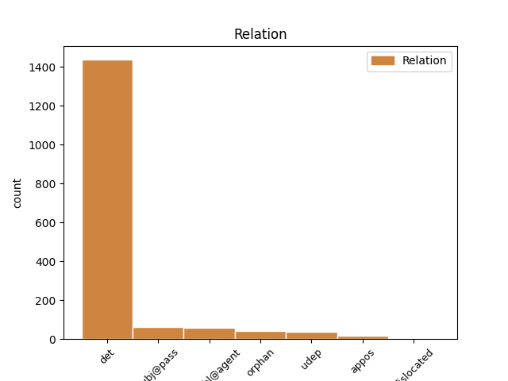
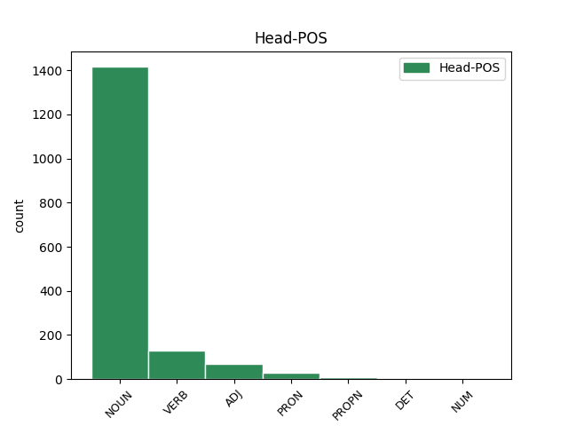
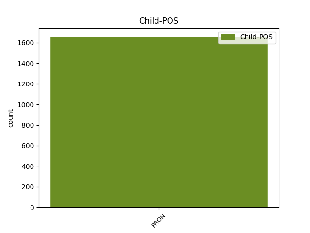

Distribution of features within this leaf



Agreement Rules sorted by frequency.
- When the dependent token is the determiner(det) of the head token, and the head token is NOUN and the dependent token is PRON.
1 ac _ _ _ _ 0 _ _ _
2 videat _ _ _ _ 0 _ _ _
3 in _ _ _ _ 0 _ _ _
4 primis _ _ _ _ 0 _ _ _
5 quibus qui PRON Pr Case=Abl|Number=Plur|PronType=Rel 7 det _ ref=1.134
6 de _ _ _ _ 0 _ _ _
7 rebus res NOUN Nb Case=Abl|Gender=Fem|Number=Plur 0 _ _ _
8 loquatur _ _ _ _ 0 _ _ _
1 Sic _ _ _ _ 0 _ _ _
2 enim _ _ _ _ 0 _ _ _
3 est _ _ _ _ 0 _ _ _
4 faciendum _ _ _ _ 0 _ _ _
5 ut _ _ _ _ 0 _ _ _
6 contra _ _ _ _ 0 _ _ _
7 universam _ _ _ _ 0 _ _ _
8 naturam _ _ _ _ 0 _ _ _
9 nihil _ _ _ _ 0 _ _ _
10 contendamus _ _ _ _ 0 _ _ _
11 ea is PRON Pp Case=Abl|Gender=Fem|Number=Sing|Person=3|PronType=Prs 13 subj@pass _ ref=1.110
12 tamen _ _ _ _ 0 _ _ _
13 conservata conservo VERB V- Aspect=Perf|Case=Abl|Gender=Fem|Number=Sing|Tense=Past|VerbForm=Part|Voice=Pass 0 _ _ _
14 propriam _ _ _ _ 0 _ _ _
15 nostram _ _ _ _ 0 _ _ _
16 sequamur _ _ _ _ 0 _ _ _
17 ut _ _ _ _ 0 _ _ _
18 etiamsi _ _ _ _ 0 _ _ _
19 sint _ _ _ _ 0 _ _ _
20 alia _ _ _ _ 0 _ _ _
21 graviora _ _ _ _ 0 _ _ _
22 atque _ _ _ _ 0 _ _ _
23 meliora _ _ _ _ 0 _ _ _
24 tamen _ _ _ _ 0 _ _ _
25 nos _ _ _ _ 0 _ _ _
26 studia _ _ _ _ 0 _ _ _
27 nostra _ _ _ _ 0 _ _ _
28 nostrae _ _ _ _ 0 _ _ _
29 naturae _ _ _ _ 0 _ _ _
30 regula _ _ _ _ 0 _ _ _
31 metiamur _ _ _ _ 0 _ _ _
1 Quare _ _ _ _ 0 _ _ _
2 cum _ _ _ _ 0 _ _ _
3 hoc _ _ _ _ 0 _ _ _
4 commune _ _ _ _ 0 _ _ _
5 sit _ _ _ _ 0 _ _ _
6 potentiae _ _ _ _ 0 _ _ _
7 cupidorum _ _ _ _ 0 _ _ _
8 cum _ _ _ _ 0 _ _ _
9 iis is PRON Pp Case=Abl|Gender=Masc|Number=Plur|Person=3|PronType=Prs 12 det _ ref=1.70
10 quos _ _ _ _ 0 _ _ _
11 dixi _ _ _ _ 0 _ _ _
12 otiosis otiosus ADJ A- Case=Abl|Degree=Pos|Number=Plur 0 _ _ _
13 alteri _ _ _ _ 0 _ _ _
14 se _ _ _ _ 0 _ _ _
15 adipisci _ _ _ _ 0 _ _ _
16 id _ _ _ _ 0 _ _ _
17 posse _ _ _ _ 0 _ _ _
18 arbitrantur _ _ _ _ 0 _ _ _
19 si _ _ _ _ 0 _ _ _
20 opes _ _ _ _ 0 _ _ _
21 magnas _ _ _ _ 0 _ _ _
22 habeant _ _ _ _ 0 _ _ _
23 alteri _ _ _ _ 0 _ _ _
24 si _ _ _ _ 0 _ _ _
25 contenti _ _ _ _ 0 _ _ _
26 sint _ _ _ _ 0 _ _ _
27 et _ _ _ _ 0 _ _ _
28 suo _ _ _ _ 0 _ _ _
29 et _ _ _ _ 0 _ _ _
30 parvo _ _ _ _ 0 _ _ _
1 nam _ _ _ _ 0 _ _ _
2 si _ _ _ _ 0 _ _ _
3 tu _ _ _ _ 0 _ _ _
4 me _ _ _ _ 0 _ _ _
5 uno _ _ _ _ 0 _ _ _
6 non _ _ _ _ 0 _ _ _
7 sine _ _ _ _ 0 _ _ _
8 maerore _ _ _ _ 0 _ _ _
9 cares _ _ _ _ 0 _ _ _
10 quid quis PRON Pi Case=Acc|Gender=Neut|Number=Sing|PronType=Int 11 orphan _ ref=3.15.2
11 me ego PRON Pp Case=Acc|Gender=Masc|Number=Sing|Person=1|PronType=Prs 0 _ _ _
12 censes _ _ _ _ 0 _ _ _
13 qui _ _ _ _ 0 _ _ _
14 et _ _ _ _ 0 _ _ _
15 te _ _ _ _ 0 _ _ _
16 et _ _ _ _ 0 _ _ _
17 omnibus _ _ _ _ 0 _ _ _
1 de _ _ _ _ 0 _ _ _
2 Messalla _ _ _ _ 0 _ _ _
3 ad _ _ _ _ 0 _ _ _
4 te _ _ _ _ 0 _ _ _
5 statim _ _ _ _ 0 _ _ _
6 ut _ _ _ _ 0 _ _ _
7 audivi _ _ _ _ 0 _ _ _
8 de _ _ _ _ 0 _ _ _
9 Gyaro _ _ _ _ 0 _ _ _
10 dedi _ _ _ _ 0 _ _ _
11 litteras _ _ _ _ 0 _ _ _
12 et _ _ _ _ 0 _ _ _
13 id is PRON Pp Case=Nom|Gender=Neut|Number=Sing|Person=3|PronType=Prs 0 _ _ _
14 ipsum ipse PRON Pp Case=Nom|Gender=Neut|Number=Sing|Person=3|PronType=Prs 13 det _ ref=5.12.2
15 consilium _ _ _ _ 0 _ _ _
16 nostrum _ _ _ _ 0 _ _ _
17 etiam _ _ _ _ 0 _ _ _
18 ad _ _ _ _ 0 _ _ _
19 Hortensium _ _ _ _ 0 _ _ _
20 cui _ _ _ _ 0 _ _ _
21 quidem _ _ _ _ 0 _ _ _
22 valde _ _ _ _ 0 _ _ _
23 συνηγωνίων _ _ _ _ 0 _ _ _
1 si _ _ _ _ 0 _ _ _
2 non _ _ _ _ 0 _ _ _
3 impetraret _ _ _ _ 0 _ _ _
4 sese se PRON Pk Case=Acc|Gender=Masc|Number=Sing|Person=3|PronType=Prs|Reflex=Yes 0 _ _ _
5 quoniam _ _ _ _ 0 _ _ _
6 Marco _ _ _ _ 0 _ _ _
7 Messala _ _ _ _ 0 _ _ _
8 Marco _ _ _ _ 0 _ _ _
9 Pisone _ _ _ _ 0 _ _ _
10 consulibus _ _ _ _ 0 _ _ _
11 senatus _ _ _ _ 0 _ _ _
12 censuisset _ _ _ _ 0 _ _ _
13 uti _ _ _ _ 0 _ _ _
14 quicumque _ _ _ _ 0 _ _ _
15 Galliam _ _ _ _ 0 _ _ _
16 provinciam _ _ _ _ 0 _ _ _
17 obtineret _ _ _ _ 0 _ _ _
18 quod _ _ _ _ 0 _ _ _
19 commodo _ _ _ _ 0 _ _ _
20 rei _ _ _ _ 0 _ _ _
21 publicae _ _ _ _ 0 _ _ _
22 facere _ _ _ _ 0 _ _ _
23 posset _ _ _ _ 0 _ _ _
24 Haeduos _ _ _ _ 0 _ _ _
25 ceteros _ _ _ _ 0 _ _ _
26 que _ _ _ _ 0 _ _ _
27 amicos _ _ _ _ 0 _ _ _
28 populi _ _ _ _ 0 _ _ _
29 Romani _ _ _ _ 0 _ _ _
30 defenderet _ _ _ _ 0 _ _ _
31 se se PRON Pk Case=Acc|Gender=Masc|Number=Sing|Person=3|PronType=Prs|Reflex=Yes 4 appos _ ref=1.35.4
32 Haeduorum _ _ _ _ 0 _ _ _
33 iniurias _ _ _ _ 0 _ _ _
34 non _ _ _ _ 0 _ _ _
35 neglecturum _ _ _ _ 0 _ _ _
1 in _ _ _ _ 0 _ _ _
2 hos _ _ _ _ 0 _ _ _
3 eadem _ _ _ _ 0 _ _ _
4 omnia _ _ _ _ 0 _ _ _
5 sunt _ _ _ _ 0 _ _ _
6 iura ius NOUN Nb Case=Nom|Gender=Neut|Number=Plur 0 _ _ _
7 quae qui PRON Pr Case=Nom|Gender=Neut|Number=Plur|PronType=Rel 6 appos _ ref=6.13.2
8 dominis _ _ _ _ 0 _ _ _
9 in _ _ _ _ 0 _ _ _
10 servos _ _ _ _ 0 _ _ _
1 Caesar _ _ _ _ 0 _ _ _
2 obsidibus _ _ _ _ 0 _ _ _
3 acceptis _ _ _ _ 0 _ _ _
4 primis _ _ _ _ 0 _ _ _
5 civitatis _ _ _ _ 0 _ _ _
6 atque _ _ _ _ 0 _ _ _
7 ipsius ipse PRON Pp Case=Gen|Number=Sing|Person=3|PronType=Prs 8 det _ ref=2.13.1
8 Galbae Galba PROPN Ne Case=Gen|Gender=Masc|Number=Sing 0 _ _ _
9 regis _ _ _ _ 0 _ _ _
10 duobus _ _ _ _ 0 _ _ _
11 filiis _ _ _ _ 0 _ _ _
12 armis _ _ _ _ 0 _ _ _
13 que _ _ _ _ 0 _ _ _
14 omnibus _ _ _ _ 0 _ _ _
15 ex _ _ _ _ 0 _ _ _
16 oppido _ _ _ _ 0 _ _ _
17 traditis _ _ _ _ 0 _ _ _
18 in _ _ _ _ 0 _ _ _
19 deditionem _ _ _ _ 0 _ _ _
20 Suessiones _ _ _ _ 0 _ _ _
21 accipit _ _ _ _ 0 _ _ _
22 exercitum _ _ _ _ 0 _ _ _
23 que _ _ _ _ 0 _ _ _
24 in _ _ _ _ 0 _ _ _
25 Bellovacos _ _ _ _ 0 _ _ _
26 ducit _ _ _ _ 0 _ _ _
1 de _ _ _ _ 0 _ _ _
2 re _ _ _ _ 0 _ _ _
3 Piliae _ _ _ _ 0 _ _ _
4 quod _ _ _ _ 0 _ _ _
5 scribis _ _ _ _ 0 _ _ _
6 erit _ _ _ _ 0 _ _ _
7 mihi ego PRON Pp Case=Dat|Gender=Masc|Number=Sing|Person=1|PronType=Prs 8 udep _ ref=4.16.4
8 curae cura NOUN Nb Case=Dat|Gender=Fem|Number=Sing 0 _ _ _
1 et _ _ _ _ 0 _ _ _
2 qualis qualis PRON Pi Case=Nom|Gender=Fem,Masc|Number=Sing|PronType=Int 4 dislocated _ ref=1COR_15.48
3 caelestis _ _ _ _ 0 _ _ _
4 tales talis ADJ Pd Case=Nom|Gender=Fem,Masc|Number=Plur 0 _ _ _
5 et _ _ _ _ 0 _ _ _
6 caelestes _ _ _ _ 0 _ _ _
1 postero _ _ _ _ 0 _ _ _
2 autem _ _ _ _ 0 _ _ _
3 die _ _ _ _ 0 _ _ _
4 Caesar Caesar PROPN Ne Case=Nom|Gender=Masc|Number=Sing 0 _ _ _
5 is is PRON Pp Case=Nom|Gender=Masc|Number=Sing|Person=3|PronType=Prs 4 appos _ ref=2.24.3
6 qui _ _ _ _ 0 _ _ _
7 olim _ _ _ _ 0 _ _ _
8 praetor _ _ _ _ 0 _ _ _
9 cum _ _ _ _ 0 _ _ _
10 esset _ _ _ _ 0 _ _ _
11 Quintum _ _ _ _ 0 _ _ _
12 Catulum _ _ _ _ 0 _ _ _
13 ex _ _ _ _ 0 _ _ _
14 inferiore _ _ _ _ 0 _ _ _
15 loco _ _ _ _ 0 _ _ _
16 iusserat _ _ _ _ 0 _ _ _
17 dicere _ _ _ _ 0 _ _ _
18 Vettium _ _ _ _ 0 _ _ _
19 in _ _ _ _ 0 _ _ _
20 rostra _ _ _ _ 0 _ _ _
21 produxit _ _ _ _ 0 _ _ _
22 eum _ _ _ _ 0 _ _ _
23 que _ _ _ _ 0 _ _ _
24 in _ _ _ _ 0 _ _ _
25 eo _ _ _ _ 0 _ _ _
26 loco _ _ _ _ 0 _ _ _
27 constituit _ _ _ _ 0 _ _ _
28 quo _ _ _ _ 0 _ _ _
29 Bibulo _ _ _ _ 0 _ _ _
30 consuli _ _ _ _ 0 _ _ _
31 adspirare _ _ _ _ 0 _ _ _
32 non _ _ _ _ 0 _ _ _
33 liceret _ _ _ _ 0 _ _ _
1 his hic ADJ Pd Case=Dat|Gender=Masc|Number=Plur 0 _ _ _
2 autem _ _ _ _ 0 _ _ _
3 qui _ _ _ _ 0 _ _ _
4 salvi _ _ _ _ 0 _ _ _
5 fiunt _ _ _ _ 0 _ _ _
6 id _ _ _ _ 0 _ _ _
7 est _ _ _ _ 0 _ _ _
8 nobis nos PRON Pp Case=Dat|Gender=Masc|Number=Plur|Person=1|PronType=Prs 1 appos _ ref=1COR_1.18
9 virtus _ _ _ _ 0 _ _ _
10 Dei _ _ _ _ 0 _ _ _
11 est _ _ _ _ 0 _ _ _
1 spes _ _ _ _ 0 _ _ _
2 homini _ _ _ _ 0 _ _ _
3 est _ _ _ _ 0 _ _ _
4 iniecta _ _ _ _ 0 _ _ _
5 non _ _ _ _ 0 _ _ _
6 eadem idem DET Pd Case=Nom|Gender=Fem|Number=Sing 0 _ _ _
7 quae qui PRON Pr Case=Nom|Gender=Fem|Number=Sing|PronType=Rel 6 det _ ref=3.22.1
8 mihi _ _ _ _ 0 _ _ _
9 posse _ _ _ _ 0 _ _ _
10 nos _ _ _ _ 0 _ _ _
11 una _ _ _ _ 0 _ _ _
12 decedere _ _ _ _ 0 _ _ _
1 illud _ _ _ _ 0 _ _ _
2 abs _ _ _ _ 0 _ _ _
3 te _ _ _ _ 0 _ _ _
4 peto _ _ _ _ 0 _ _ _
5 des _ _ _ _ 0 _ _ _
6 operam opera NOUN Nb Case=Acc|Gender=Fem|Number=Sing 0 _ _ _
7 id is PRON Pp Case=Acc|Gender=Neut|Number=Sing|Person=3|PronType=Prs 6 dislocated _ ref=3.25.1
8 quod _ _ _ _ 0 _ _ _
9 mihi _ _ _ _ 0 _ _ _
10 adfirmasti _ _ _ _ 0 _ _ _
11 ut _ _ _ _ 0 _ _ _
12 te _ _ _ _ 0 _ _ _
13 ante _ _ _ _ 0 _ _ _
14 Kalendas _ _ _ _ 0 _ _ _
15 Ianuarias _ _ _ _ 0 _ _ _
16 ubicumque _ _ _ _ 0 _ _ _
17 erimus _ _ _ _ 0 _ _ _
18 sistas _ _ _ _ 0 _ _ _
1 Quarum _ _ _ _ 0 _ _ _
2 ex _ _ _ _ 0 _ _ _
3 vestigiis _ _ _ _ 0 _ _ _
4 cum _ _ _ _ 0 _ _ _
5 est _ _ _ _ 0 _ _ _
6 animadversum _ _ _ _ 0 _ _ _
7 a _ _ _ _ 0 _ _ _
8 venatoribus _ _ _ _ 0 _ _ _
9 quo _ _ _ _ 0 _ _ _
10 se _ _ _ _ 0 _ _ _
11 recipere _ _ _ _ 0 _ _ _
12 consuerint _ _ _ _ 0 _ _ _
13 omnes _ _ _ _ 0 _ _ _
14 eo _ _ _ _ 0 _ _ _
15 loco _ _ _ _ 0 _ _ _
16 aut _ _ _ _ 0 _ _ _
17 ab _ _ _ _ 0 _ _ _
18 radicibus _ _ _ _ 0 _ _ _
19 subruunt _ _ _ _ 0 _ _ _
20 aut _ _ _ _ 0 _ _ _
21 accidunt _ _ _ _ 0 _ _ _
22 arbores _ _ _ _ 0 _ _ _
23 tantum _ _ _ _ 0 _ _ _
24 ut _ _ _ _ 0 _ _ _
25 summa _ _ _ _ 0 _ _ _
26 species _ _ _ _ 0 _ _ _
27 earum is PRON Pp Case=Gen|Gender=Fem|Number=Plur|Person=3|PronType=Prs 28 det _ ref=6.27.4
28 stantium sto VERB V- Case=Gen|Gender=Fem|Number=Plur|Tense=Pres|VerbForm=Part|Voice=Act 0 _ _ _
29 relinquatur _ _ _ _ 0 _ _ _
1 His _ _ _ _ 0 _ _ _
2 idem idem DET Pd Case=Nom|Gender=Masc|Number=Sing 0 _ _ _
3 propositum _ _ _ _ 0 _ _ _
4 fuit _ _ _ _ 0 _ _ _
5 quod qui PRON Pr Case=Nom|Gender=Neut|Number=Sing|PronType=Rel 2 appos _ ref=1.70
6 regibus _ _ _ _ 0 _ _ _
7 ut _ _ _ _ 0 _ _ _
8 ne _ _ _ _ 0 _ _ _
9 qua _ _ _ _ 0 _ _ _
10 re _ _ _ _ 0 _ _ _
11 egerent _ _ _ _ 0 _ _ _
12 ne _ _ _ _ 0 _ _ _
13 cui _ _ _ _ 0 _ _ _
14 parerent _ _ _ _ 0 _ _ _
15 libertate _ _ _ _ 0 _ _ _
16 uterentur _ _ _ _ 0 _ _ _
17 cuius _ _ _ _ 0 _ _ _
18 proprium _ _ _ _ 0 _ _ _
19 est _ _ _ _ 0 _ _ _
20 sic _ _ _ _ 0 _ _ _
21 vivere _ _ _ _ 0 _ _ _
22 ut _ _ _ _ 0 _ _ _
23 velis _ _ _ _ 0 _ _ _
Disagree Examples:
1 Iacob _ _ _ _ 0 _ _ _
2 autem _ _ _ _ 0 _ _ _
3 genuit _ _ _ _ 0 _ _ _
4 Iudam _ _ _ _ 0 _ _ _
5 et _ _ _ _ 0 _ _ _
6 fratres frater NOUN Nb Case=Acc|Gender=Masc|Number=Plur 0 _ _ _
7 eius is PRON Pp Case=Gen|Gender=Masc|Number=Sing|Person=3|PronType=Prs 6 det _ ref=MATT_1.2
1 Iosias _ _ _ _ 0 _ _ _
2 autem _ _ _ _ 0 _ _ _
3 genuit _ _ _ _ 0 _ _ _
4 Iechoniam _ _ _ _ 0 _ _ _
5 et _ _ _ _ 0 _ _ _
6 fratres frater NOUN Nb Case=Acc|Gender=Masc|Number=Plur 0 _ _ _
7 eius is PRON Pp Case=Gen|Gender=Masc|Number=Sing|Person=3|PronType=Prs 6 det _ ref=MATT_1.11
8 in _ _ _ _ 0 _ _ _
9 transmigratione _ _ _ _ 0 _ _ _
10 Babylonis _ _ _ _ 0 _ _ _
1 cum _ _ _ _ 0 _ _ _
2 esset _ _ _ _ 0 _ _ _
3 desponsata _ _ _ _ 0 _ _ _
4 mater mater NOUN Nb Case=Nom|Gender=Fem|Number=Sing 0 _ _ _
5 eius is PRON Pp Case=Gen|Gender=Masc|Number=Sing|Person=3|PronType=Prs 4 det _ ref=MATT_1.18
6 Maria _ _ _ _ 0 _ _ _
7 Ioseph _ _ _ _ 0 _ _ _
8 antequam _ _ _ _ 0 _ _ _
9 convenirent _ _ _ _ 0 _ _ _
10 inventa _ _ _ _ 0 _ _ _
11 est _ _ _ _ 0 _ _ _
12 in _ _ _ _ 0 _ _ _
13 utero _ _ _ _ 0 _ _ _
14 habens _ _ _ _ 0 _ _ _
15 de _ _ _ _ 0 _ _ _
16 Spiritu _ _ _ _ 0 _ _ _
17 Sancto _ _ _ _ 0 _ _ _
1 Ioseph _ _ _ _ 0 _ _ _
2 autem _ _ _ _ 0 _ _ _
3 vir vir NOUN Nb Case=Nom|Gender=Masc|Number=Sing 0 _ _ _
4 eius is PRON Pp Case=Gen|Gender=Fem|Number=Sing|Person=3|PronType=Prs 3 det _ ref=MATT_1.19
5 cum _ _ _ _ 0 _ _ _
6 esset _ _ _ _ 0 _ _ _
7 iustus _ _ _ _ 0 _ _ _
8 et _ _ _ _ 0 _ _ _
9 nollet _ _ _ _ 0 _ _ _
10 eam _ _ _ _ 0 _ _ _
11 traducere _ _ _ _ 0 _ _ _
12 voluit _ _ _ _ 0 _ _ _
13 occulte _ _ _ _ 0 _ _ _
14 dimittere _ _ _ _ 0 _ _ _
15 eam _ _ _ _ 0 _ _ _
1 et _ _ _ _ 0 _ _ _
2 vocabis _ _ _ _ 0 _ _ _
3 nomen nomen NOUN Nb Case=Acc|Gender=Neut|Number=Sing 0 _ _ _
4 eius is PRON Pp Case=Gen|Gender=Masc|Number=Sing|Person=3|PronType=Prs 3 det _ ref=MATT_1.21
5 Iesum _ _ _ _ 0 _ _ _